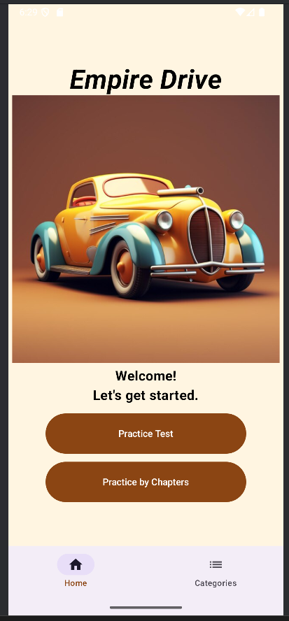
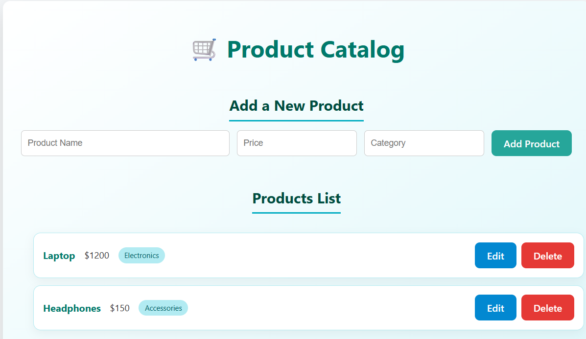
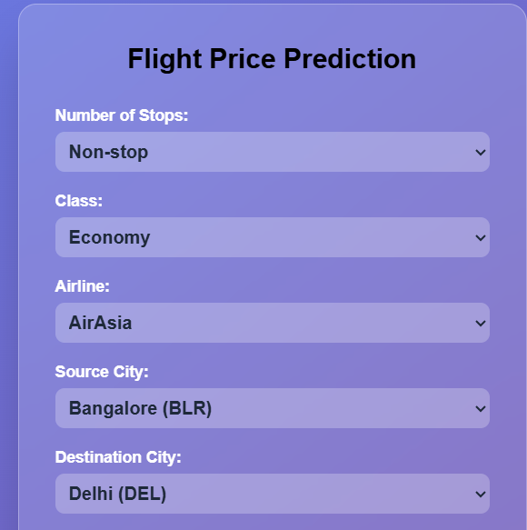
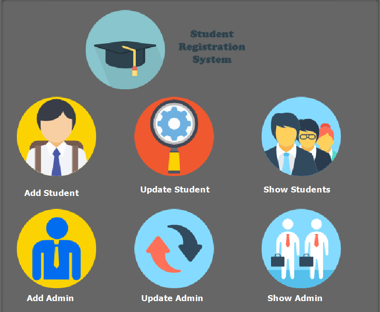
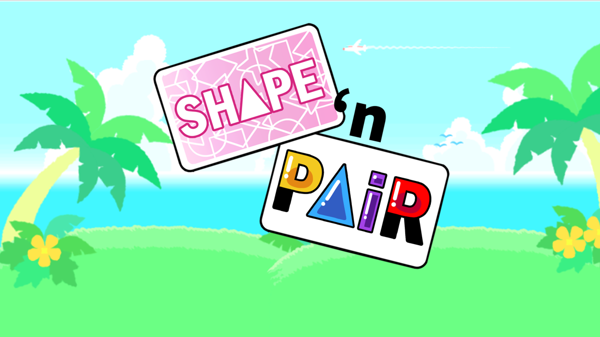

Hello! I'm Fatima Mansha.
A Bit About Me
I’m a Computer Science graduate (GPA 3.9) from CUNY College of Staten Island, where I earned my Bachelor of Science in May 2026. I’m passionate about full-stack web development, mobile app development, and applied machine learning & AI — and I love turning ideas into real, working applications. From building Android apps with Kotlin to training ML models and developing REST APIs, I enjoy exploring how different technologies work together to solve real problems. I’m currently expanding my skills through CodePath’s Applied AI Engineering program, and I see every project as a chance to grow. Outside of my studies, I enjoy traveling and discovering new places, which inspires me to bring fresh perspectives into my work.
Projects
Some of my key projects highlighting software engineering, machine learning, and game development experience.

Empire Drive – DMV Practice App
Built and deployed an Android app to help users prepare for the NY State DMV learner’s permit test, using real questions and traffic sign data from the official DMV manual. Structured JSON-based data handling to load questions, validate answers, track progress, and manage navigation across multiple quiz screens. Debugged and resolved critical runtime crashes from UI theme/color configuration, improving app stability. Built with Kotlin and Jetpack Compose.
View Project
Full-Stack Products Web App
Built a full-stack CRUD web application with a React frontend and a Node.js/Express backend, implementing RESTful API routes for complete product data management. Tested and validated all API endpoints using Postman to ensure correct request handling, data validation, and error responses. Managed version control with Git/GitHub and wrote clear setup documentation to support easy deployment and team collaboration.
View Project
Flight Price Prediction Web App
I have built a Flask-based web app to predict flight prices and durations using real-world flight data. Trained multiple machine learning models (Linear Regression, Random Forest, XGBoost) and selected Random Forest achieving 98% accuracy. Developed a responsive frontend and deployed the model via a Flask API for live predictions.
View Project
Student Management System
Designed and developed a Student Management System using Java Swing and MySQL (XAMPP). Enabled admins to efficiently manage students, teachers, courses, and records with full CRUD operations. Built a user-friendly UI with secure access control and documented the system for future scalability.
View Project
Shape 'n' Pair
Created “Shape 'n' Pair”, a tile-matching game with single-player and two-player modes using JavaFX and IntelliJ. Implemented interactive UI, score tracking, turn-based multiplayer mode, and restart options. Codebase includes comprehensive Javadoc documentation for maintainability.
View ProjectSkills
Programming
- C++
- Java
- Python
- Kotlin
- JavaScript
- SQL
- HTML
- CSS
Tools & Technologies
- React
- Node.js
- Express
- Flask
- Jetpack Compose
- Android Studio
- Postman
- GitHub
- IntelliJ IDEA
- PyCharm
- Visual Studio
- MySQL
- NetBeans
Certifications
- JPMorgan Chase & Co. – Software Engineering Lite (Forage, 2024)
- CodePath Applied AI Engineering (In Progress, 2026)
Testing
- API Testing (Postman)
- Manual Testing
- Debugging
- Error Tracking
- REST APIs
Languages
- English
- Urdu
Education
City University of New York, College of Staten Island
Bachelor of Science in Computer Science — GPA: 3.9
Graduated: May 2026
I’ve been diving deep into programming, databases, and algorithms. I enjoy building projects that challenge my skills and help me learn new concepts every day.
Relevant Coursework: Data Structures & Algorithms, Software Engineering, Mobile App Development, Web Development, Database Fundamentals, Computer Networking & Security, Data Science, Operating Systems, OOP
Applied AI Engineering
CodePath
In Progress — 2026
Currently building skills in applied AI engineering, learning how to design and integrate AI-powered features into real-world applications.
Contact Me
If you’d like to get in touch, just click an icon below or use the form.